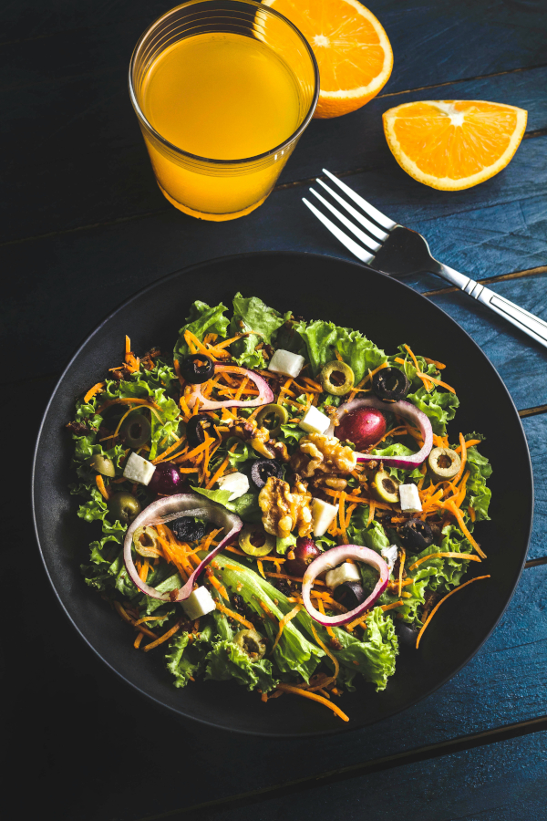

Моё хобби
Готовка
После программирования и изучения различных Open Source технологий, мне также нравится готовка. Не могу сказать, какую именно кухню я практикую, так как готовка для меня - это творческий процесс, в моменты вдохновения я часто экспериментирую и полагаюсь на интуицию. К счастью, в 90% случаев, интуиция меня не подводит, а остальные 10 - это тоже опыт. Думаю, как раз в этих 10 процентах, на свет и появилась всеми обожаемая пицца с ананасами.
P.S Пицца с ананасами норм.
Linux

Люблю изучать различные Open Source решения. Было время (сейчас оно ушло), когда я переустанавливал систему днями напролет. Почему? Потому что изучение GNU\Linux операционных систем по другому невозможно. Дается полная свобода и ужасающая мощь... которая приводит к руинам, чинить навыков пока нет, запускаем переустановку. Из всех плюс\минус популярных дистрибутивов и оболочек, я, думаю, попробовал все. Раве что, не добрался до Gentoo и не собирал Linux from scratch.
BTW I Use Arch!